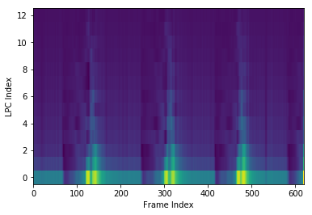

We use cookies on this website to distinguish you from other users.
We use this data to improve our content experience and for targeted advertising.
By continuing to use this website you consent to our use of cookies.
For more information, please see our
Cookie Policy.
[6]:
import scipy
from spafe.utils import vis
from spafe.features.lpc import lpc, lpcc
# init input vars
num_ceps = 13
lifter = 0
normalize = True
# read wav
fs, sig = scipy.io.wavfile.read("test.wav")
# compute lpcs
lpcs = lpc(sig=sig, fs=fs, num_ceps=num_ceps)
# visualize features
vis.visualize_features(lpcs, 'LPC Index', 'Frame Index')
# visualize spectogram
vis.spectogram(sig, fs)
# compute lpccs
lpccs = lpcc(sig=sig, fs=fs, num_ceps=num_ceps, lifter=lifter, normalize=normalize)
# visualize features
vis.visualize_features(lpccs, 'LPCC Index', 'Frame Index')



[ ]: